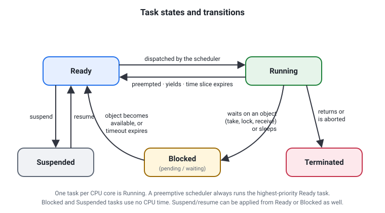

Tasks and task states
The task is the unit of work an RTOS schedules. Before you can synchronise tasks you need a precise picture of what a task is and which states it moves through.
- Define a real-time system and distinguish hard, firm and soft deadlines.
- Define a task and list what the kernel stores for each one.
- Name the task states (Running, Ready, Blocked, Suspended, Terminated) and the event that causes each transition.
- Explain why a well-designed task spends most of its life Blocked.
- Describe the role of the idle task.
What "real-time" means
Real-time system: a system whose correctness depends not only on the logical result of a computation but also on the time at which the result is produced.
Real-time does not mean fast. It means predictable: the worst-case response time must be known and must fit inside the deadline. Deadlines come in three strengths:
| Class | Consequence of a missed deadline | Example |
|---|---|---|
| Hard | System failure; the late result is worthless and may cause damage. | Airbag trigger, motor commutation, brake-by-wire |
| Firm | The late result is worthless, but occasional misses are tolerable. | A video frame decoded after its display slot |
| Soft | The result is still useful but its value degrades with lateness. | UI refresh, logging, network telemetry |
A real-time operating system (RTOS) is a kernel that lets you split firmware into concurrent tasks while keeping their timing analysable. It provides tasks, a priority-based scheduler, time services (delays and timeouts), and the synchronisation and communication objects covered in Part II.
What a task is
Task (called a thread in Zephyr and POSIX): an independent flow of execution with its own stack, its own saved register context, a priority and a state, managed by the kernel scheduler.
On a microcontroller all tasks share one address space: any task can read or write any global variable. That is what makes tasks cheap compared with processes on a desktop OS, and it is also why Part II and Part III of this course exist.
A task usually has this shape: initialise once, then loop forever, and inside the loop block until there is work to do.
task_entry():
initialise what this task owns
loop forever:
wait for work ← blocks: semaphore, queue, event, or delay
do the work
publish the result ← give, send, set bitsFor every task the kernel keeps a task control block (TCB). Typical contents:
- the saved stack pointer (everything else about the CPU context lives on the task's own stack, see Lesson 03);
- the base priority and, when priority inheritance is active, the current effective priority;
- the state, and if Blocked, which object it waits on and when its timeout expires;
- the stack base and size, a name, and list links that place it in the ready queue or a wait queue.
Tasks versus interrupt service routines
An interrupt service routine (ISR) is not a task. It is invoked by hardware, runs to completion on the interrupt stack, has no TCB, and cannot block: there is no context for the scheduler to suspend. Any ISR outranks every task, whatever the task priorities. Lesson 04 covers how ISRs and tasks cooperate.
Task states

| State | Meaning | Leaves the state when |
|---|---|---|
| Running | Executing on the CPU. Exactly one task per core. | It blocks, yields, is preempted by a higher-priority task, its time slice expires, or it terminates. |
| Ready | Able to run, waiting for the CPU. | The scheduler selects it (it is the highest-priority ready task). |
| Blocked (pending, waiting) | Waiting for an event: a semaphore, mutex, queue message, event bits, or the end of a delay. Uses no CPU time. | The event occurs, or the wait's timeout expires. It then becomes Ready, not Running. |
| Suspended | Removed from scheduling by an explicit call. Not waiting for any event. | Another context explicitly resumes it. |
| Terminated (dead) | Its entry function returned or it was aborted. | Never (its resources may be reused). |
Two transitions matter most for everything that follows:
- Running → Blocked happens only by the task's own action: it calls a kernel function that has to wait. A task cannot be forced into Blocked by another task.
- Blocked → Ready is caused by someone else: another task or an ISR gives the semaphore, sends the message or sets the bits; or the kernel's tick handler notices that the timeout expired.
Why tasks should spend most of their time Blocked
A priority-based scheduler always runs the highest-priority Ready task. If a high-priority task polls a flag in a loop instead of blocking, it stays Ready forever and every lower-priority task starves. Blocking is how a task tells the scheduler "I have nothing to do; give the CPU to someone else". In a healthy design, the CPU load comes from bursts of work, and between bursts all tasks are Blocked.
The idle task
When every task is Blocked or Suspended, the kernel runs the idle task, which has the lowest possible priority and is always Ready. It typically executes a wait-for-interrupt instruction (WFI on Arm) to save power, or enters a deeper low-power mode. The percentage of time spent in the idle task is the simplest measure of spare CPU capacity.
Worked example: a thermostat
A thermostat has three tasks:
- Sensor (high priority): every 100 ms, reads the temperature sensor, sends the value to Control.
- Control (medium): waits for a new value, runs the control law, sets the heater output.
- Display (low): every 500 ms, redraws the screen.
At t = 0 ms all three are Blocked: Sensor in a 100 ms delay, Control waiting on its input queue, Display in a 500 ms delay. The idle task runs.
At t = 100 ms the delay of Sensor expires: Sensor goes Blocked → Ready → Running (it is the highest-priority Ready task). It reads the sensor (0.2 ms), sends the reading and delays again: Running → Blocked. Sending made Control Ready. Control runs for 0.5 ms and goes back to waiting on its queue: Running → Blocked. Idle runs again.
At t = 500 ms Sensor and Display become Ready at the same tick. Sensor runs first because of its priority; Display stays Ready until Sensor and then Control have blocked.
Total CPU load: roughly 0.7 ms per 100 ms plus the display redraw time per 500 ms. The rest of the time the CPU idles.
Common mistakes
- Busy-waiting.
while (!flag) { }in a task keeps it Ready and starves every lower-priority task. Block on a kernel object instead. - Using a delay as synchronisation. "Sleep 10 ms, by then the data is there" works on the bench and fails under load. Wait for the event itself.
- One task per function. Each task costs a stack and a TCB, and every pair of tasks that shares data needs synchronisation. Create a task for each independent timing requirement or blocking point, not for each feature.
- Accidentally returning from the entry function. In some kernels this is a fault; in others the task silently terminates. If a task is meant to run forever, make the loop explicit.
- Treating an ISR as a task. ISRs cannot block, so they cannot call any API that may wait.
What this becomes in Zephyr
- Tasks are threads:
k_thread_create()at run time, orK_THREAD_DEFINE()for a thread created at boot. The stack comes fromK_THREAD_STACK_DEFINE().main()itself runs in a thread calledmain. - Zephyr's states are Running, Ready, Pending (waiting on an object), Sleeping (
k_sleep(),k_msleep()), Suspended (k_thread_suspend()/k_thread_resume()) and Dead (returned, ork_thread_abort()). - Priorities are integers where a lower number means higher priority. Negative priorities are cooperative, zero and above are preemptible (Lesson 02).
- The board's STM32F769NI has a single Cortex-M7 core, so exactly one thread is Running at any instant. The idle thread executes
WFIwhen nothing is ready.